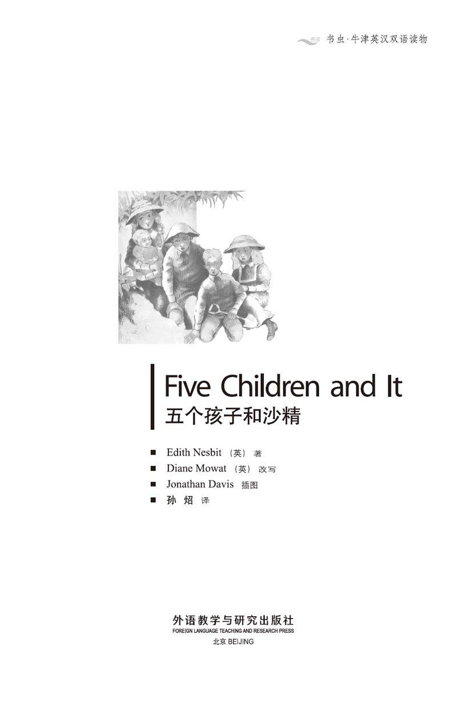
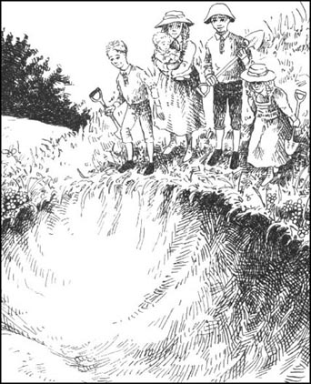
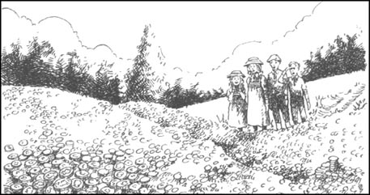
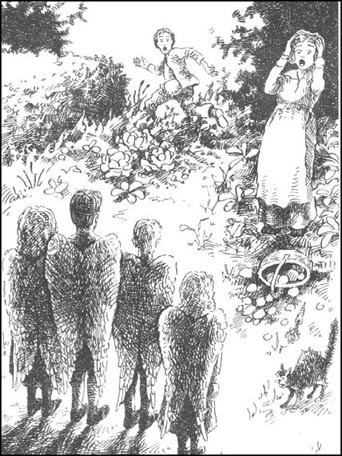
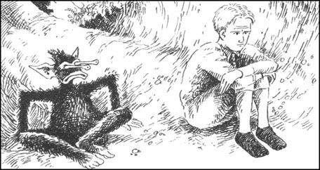
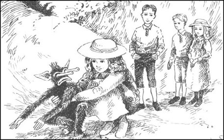
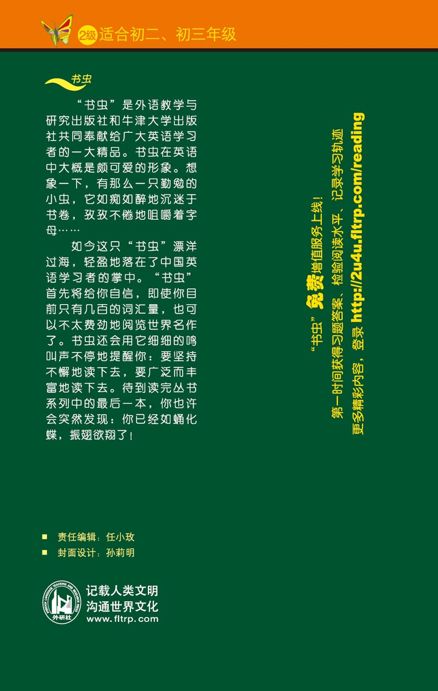

扉页

版权页
京权图字 01-97-0345
Originally published by Oxford University Press, Great Clarendon Street, Oxford. © 1995
This edition is licensed for sale in the People's Republic of China only and not for export therefrom.
'Oxford' is a registered trademark of Oxford University Press.
只限中华人民共和国境内销售，不包括香港特别行政区、澳门特别行政区及台湾省。不得出口。
图书在版编目（CIP）数据
五个孩子和沙精／（英）内斯比特（Nesbit, E.）著；（英）莫厄特（Mowat, D.）改写；孙炤译．—北京：外语教学与研究出版社，1998.6（2014.3 重印）
（书虫·牛津英汉双语读物）
书名原文：Five Children and It
ISBN 978-7-5600-1379-4
Ⅰ．五… Ⅱ．①内…②莫…③孙… Ⅲ．①英语—语言读物②儿童文学—长篇小说—英国—现代 Ⅳ．H319.4：I
中国版本图书馆CIP数据核字（2007）第009183号
出版人： 蔡剑峰
责任编辑：任小玫
封面设计：孙莉明
出版发行：外语教学与研究出版社
社 址：北京市西三环北路19号（100089）
网 址：http://www.fltrp.com
版 次：1998年6月第1版
书 号：ISBN 978-7-5600-1379-4
* * *
凡侵权、盗版书籍线索，请联系我社法律事务部
举报电话：（010）88817519 电子邮箱：banquan@fltrp.com
法律顾问：立方律师事务所 刘旭东律师
中咨律师事务所 殷 斌律师
简介
简 介
它是个“赛米德”（即沙精）。有一天孩子们在砾石坑中挖沙时发现了它。它已经几千岁了。当然了，沙精们可以帮人们实现他们的愿望——愿望每天只能实现一个，而且当太阳落山时一切也就结束了。安西娅、西里尔、罗伯特和简觉得这棒极了。他们的小弟弟还太小，不会许愿，而且大部分时间都待在家里；可其他几个盘算着要些激动人心的东西。
可那又是什么呢？变得漂亮，富有，还是能像鸟儿一样飞翔？有时候想出真正的好愿望很困难，可是脱口说出“但愿……”却是很容易的，那时你就得到了并不真正想要的东西。这时沙精就不肯帮忙了。出了差错时它就生气地说：“为什么你不先想好了再说？”
而事情的确常出差错……
伊迪丝·内斯比特1858年生于伦敦，1924年逝世。她一生从事写作，为儿童写了很多书。其中著名的有《五个孩子和沙精》、《长生鸟与地毯》及《铁路上的孩子》等。
目录
1 Beautiful Children
1
Beautiful Children
The house was about four kilometres from the station, but after only a minute or two the children began to ask, 'Are we nearly there?' And every time they saw a house they said, 'Oh, is this it?' But it never was. Then they came to the top of a hill, and there was a white house with a green garden and lots of fruit trees. 'Here we are!' Mother said.
Everyone hurried to get out of the carriage — Robert, Anthea, Jane, Cyril, and Martha, the nursemaid, with the baby. But Mother did not hurry. The children ran round the house and all through the garden to see what there was. But Mother stood and watched the driver while he carried the boxes into the house.
The children loved the house. They knew immediately that they were going to be happy there. Mother did not like the house very much because it was old and there were no cupboards. But it was deep in the country and after two years in London the children thought that it was wonderful. If you live in London and your family is not rich, you get bored because you cannot go to shops and theatres, and people say, 'Don't do this' and 'Don't go there'. In the country you can go anywhere and do anything.
The white house was on the hill, with a wood behind it and a gravel-pit on one side. It was at the gravel-pit, a week later, that the children found a fairy. Well, that was what it called itself. But it was different from other fairies.
It happened when Mother had to go and stay with Grandmother, who was ill. Martha stayed with the children, of course. But the house was very quiet and empty. The children did not know what to do. Then Cyril said, 'Let's go to the gravel- pit.'
The gravel-pit was very large, with grass and wild flowers round the sides at the top. When they got there, the children decided that they would go down into the pit to play in the sand.
'Let's dig a deep hole — perhaps we can get all the way down to Australia,' said Robert.
The others agreed and they all began to dig hard in the sand. But it was a very hot day. Baby went to sleep and Robert, Cyril, and Jane sat down to rest, but Anthea went on working on the hole.
Suddenly she screamed. 'Cyril! Come here! Quick! There's something alive!' she cried.
They all jumped up and hurried over to see what it was.
'It's got feet,' Anthea said. 'And fur. Don't hurt it. I know this sounds stupid, but it said something.'
'What did it say?' asked Cyril.
'It said, “You leave me alone.”'
The others just laughed, but the two boys began to move away more of the sand. Soon they could see that there really was something moving in the hole.
Suddenly a hard little voice cried, 'Leave me alone!'
They all jumped back and no one spoke for a minute. Then Robert said, 'But we want to see you.'
'Yes, I wish you'd come out,' Anthea said.
'Oh, well, if that's your wish,' the voice said, and the sand began to fly about everywhere. Then something brown and furry and fat fell out into the hole. 'I think I was asleep,' it said.
The children stood and looked at it. It really was very strange. It could move its eyes in and out on stalks, it had big ears and its body was fat and round and furry. Its legs and arms had soft fur all over them too, and it had hands and feet.
'What is it?' asked Jane. 'Shall we take it home?'
The thing turned its long eyes to look at her. 'Does she always say stupid things?' it said.
'She doesn't mean it,' Anthea said. 'Don't be afraid. We won't hurt you.'
The little thing was angry. 'Hurt me!' it cried. 'I'm not afraid of you!'
'Oh, don't be angry,' said Anthea kindly. 'Tell us who you are. We really don't know.'
'You don't know?' it said. 'Don't you know a Psammead when you see one?'
'A Sammyadd? What's that?' Jane said.
'A sand-fairy, of course. Don't you know a sand-fairy when you see one?'
It looked very unhappy, and Jane said, 'Of course! I can see that you're a sand-fairy now.'
And Robert said, 'Well, I didn't know that you were a Psammead, but I can see that you are something very wonderful. Please talk some more to us.'
The Psammead looked a little happier when it heard that, and it said, 'Well, you can talk to me, if you want to. Perhaps I'll answer you and perhaps I won't. Now say something.'
At first the children could not think of anything to say, but then Robert asked, 'How long have you lived here?'
'Oh, thousands of years,' the Psammead answered.
The children waited, but the Psammead was silent.
'Please tell us more,' Robert said.
'Well, all right, then,' the Psammead said. 'There were lots of us then,' it went on. 'People sent their children out to look for Psammeads, and when they found us, we gave them a wish.'
'What happened to all the Psammeads, then?' Robert asked.
'Well, if they get wet, they get ill and they usually die, and that's what happened. Most of them got wet and died. And I'm not going to tell you another thing.'
'Oh, just one more question, please,' said Robert. 'Do you give wishes now?'
'You've had one,' said the Psammead. 'You wished to see me, and here I am.'
'Oh, please. Just one more,' Anthea cried.
'Well, all right, but be quick! I'm tired of you!'
It is very difficult to think of a really good wish, in just a second or two. Then Anthea remembered a wish of hers and Jane's. She knew that the boys wouldn't like it, but it was better than nothing.
'I wish we were all very, very beautiful,' she said.
The Psammead pushed out its long eyes and got bigger and fatter, and the children waited. Then it said, 'I'm sorry. I haven't done this for a long time. I'll try again, but I can only do one wish a day for you. Do you agree to that?'
'Yes, oh yes!' the children cried.
'But remember, the wish is only for a day,' said the Psammead. 'When the sun goes down, everything goes back to what it was.'
The Psammead slowly got bigger, then suddenly went small again. 'That's all right!' it said. At once it turned and went back into the sand at the bottom of the hole.
The children stood there for a second, and then Anthea turned to speak to the others. But they were not there! She was looking at three strangers — a girl with beautiful red hair and big blue eyes, and two very good-looking boys. Suddenly she understood. They had their wish. The strangers were Robert and Cyril and Jane — but now they were beautiful. Cyril's hair was golden now, and Robert's was black.
'I liked you better before!' Robert cried angrily to his brother and sisters. 'Jane's hair looks like carrots, and Cyril looks really stupid with long golden hair.'
They went to find Baby, but he was just the same as he was before.
'Perhaps it's because he's young. He can't have wishes. We'll have to remember that next time,' Anthea said, and she held out her arms to him. But Baby's mouth turned down at the corners and then he began to cry loudly. He did not know them!
It took an hour to stop him crying and then, very tired and cross, they took him home. Martha, Baby's nursemaid, was waiting at the front door. She took Baby from them quickly.
'Where are the others?' she asked. 'And who are you?'
'We're us , of course,' Robert said. 'You don't know us because we're beautiful.'
'And we're very hungry,' said Cyril, 'and we want our lunch, please.'
'Go away!' Martha screamed. 'Or I'll send for the police,' and she closed the door in their faces.
The children were very hungry by then, and they tried three times to get into the house — but Martha would not let them in. After a while they went and sat at the bottom of the garden to wait for the sun to go down. 'The wish will finish then, won't it?' Jane said.
But the others didn't answer because no one was really sure.
It was a terrible afternoon. They had no lunch, no tea, and they were tired, angry and afraid. It's true that they were all very beautiful, but that's not a lot of help when you're unhappy. In the end they fell asleep.
It was nearly dark when they woke up. Anthea was the first to wake up and she looked at the others. They were no longer very beautiful. Everything was all right again. Happily, they all went back to the house. Of course, Martha was angry. 'Where have you been all day?' she cried.
It is not easy to explain a Psammead to an angry nursemaid, so the children didn't try.
'We met some beautiful children and we couldn't get away from them until it was nearly dark,' Anthea said. 'They were terrible, and we never want to see them again.'
And they never have.
kilometre n. 1000 metres. 公里。
carriage n. car with four wheels, pulled by a horse or horses, for carrying people.（尤指一匹或数匹马拉的载人的）四轮马车。
nursemaid n. a woman servant who helps a mother with her baby. 保姆。
immediately adv. at once. 立刻；马上。
cupboard n. a separate piece of furniture used for dishes, clothes, etc. 柜子；碗橱；衣橱。
country n. 乡村（与城市相对）。
get bored get tired. 感到厌烦；厌倦。
fairy n. a person or thing which is not real, but in stories does wonderful, impossible things. 精灵；仙女。
(be) different from unlike; not of the same kind. 与……不一样；与……不同。
gravel-pit n. a big hole in the ground or the side of a hill，where people have taken away gravel (very small stone) and sand. 砾石坑。
scream v. give a loud，cry or cries of fear or pain. （指人、鸟、兽）发出（宛如）恐惧或痛苦的尖叫声。
alive adj. living. 活着的。
fur n. the soft hair on an animal's body.（动物身上的）毛。
leave sb. alone 不动、不碰或不干涉某人或某事物；听其自然。
alone adv. ＆ adj. without others. 独自地（的）。
furry adj. covered with fur. 似毛皮的；覆有毛皮的。
turn v. (cause to) move. （使）转动。
stalk n.（植物的）柄；梗；杆。
mean v.（指词、句等）表示……的意思；含……之意。
Psammead n. 作者创造的词：沙精（此词源于一个希腊词）。
at first at the beginning. 最初；当初。
silent adj. saying little or nothing. 沉默的。
go on continue. 继续（说）。
be tired of have had enough of. 对……感到厌烦；厌倦。
look like seem(to be). 看起来像。
carrot n. plant with yellow or orange-red root. 胡萝卜。
hold out one's arms 伸出手臂。
turn down at the corners draw back the corners of the mouth. 撇嘴。
send for the police ask the police to come. 叫警察来。
in one's face 公开地；当面地。
fall asleep drop asleep; go into the state of sleep. 睡着了。
wake up stop sleeping. 醒；不再睡。
no longer not any more. 不再。
get away to escape, 设法离开；逃脱。
nearly adv. almost. 几乎。
漂亮的孩子
1 漂亮的孩子
他们的新家距车站大约四公里远，而每过一两分钟孩子们就开口问：“我们快到了吗？”而且他们每看到一幢房子都说：“哦，是这个吗？”可总不是。接着他们来到一个山顶，那儿有一幢带有绿色的花园和很多果树的白房子。“我们到了！”母亲说。
大家急忙下车——罗伯特、安西娅、简、西里尔，还有抱着婴孩的保姆马莎。可母亲不慌不忙。孩子们绕着房子跑，都穿过花园看看那里有什么。但是赶车人把箱子搬到房子里去时妈妈站着看着他。
孩子们喜欢这房子。他们马上就明白在那儿他们会很快活的。母亲不太喜欢这房子，因为它很旧，也没有柜子。可是这房子位于真正意义上的乡间；在伦敦住了两年之后，孩子们认为这一点太好了。要是住在伦敦可你的家庭又不富有，你就会觉得厌倦，因为你不能去商店和剧场，人们还会说“不许干这个”、“不许去那儿”的。在乡下你想去哪儿就去哪儿，想干什么就干什么。
这白房子位于小山上，后边有一片树林，在一边还有一个砾石坑。就是在这个砾石坑里孩子们一周之后发现了一个精灵。唔，它是这样称呼自己的，但是它和别的精灵可不一样。
事情发生在母亲去探望祖母的时候，祖母病了。当然马莎留下来和孩子们在一起。可房子里静悄悄的，空荡荡的。孩子们不知道做些什么好。过了一会儿，西里尔说：“咱们去砾石坑吧。”
砾石坑大极了，坑口四周长着青草和野花。孩子们到了那儿时，他们决定到坑里去玩沙子。

“咱们挖个深深的洞——也许能一直挖到澳大利亚呢。”罗伯特说。
别的孩子同意了，他们就都起劲地挖起沙来。可天气很热。小弟弟睡觉去了，罗伯特、西里尔和简坐下来休息，可安西娅继续挖着洞。
突然她尖叫起来。“西里尔！到这儿来！快！有什么活的东西！”她叫道。
他们都跳起身来，急忙过去看是什么东西。
“它有脚，”安西娅说，“还有毛。别伤着它。我知道这话听起来有些蠢，可它说话了。”
“它说什么？”西里尔问。
“它说：‘别来打搅我。’”
别的孩子只是笑，可那两个男孩开始挖开更多的沙子。很快他们就能看见洞里真有个东西在动。
突然一个刺耳的、细小的声音喊道：“别打搅我！”
他们都向后退了几步，一时谁也没说话。过了一会儿罗伯特说：“可是我们想看看你。”
“是啊，我希望你出来。”安西娅说。
“哦，好吧，如果那是你们的愿望的话，”那个声音说；沙子开始到处乱飞。一会儿一个褐色的、长着毛的、胖乎乎的东西从沙里飞落到洞中。“我想我刚才睡着了。”它说。
孩子们站着看着它。它的确长得很奇怪。它有一双伸缩自如的柄眼、一对大耳朵，身体又胖又圆，还毛绒绒的。它的胳膊和腿上也覆盖着柔毛，而它还长着手和脚。
“是什么呀？”简问道，“要不要把它带回家？”
这东西转动它的柄眼看着她。“她老说蠢话吗？”它说。
“她不是那个意思。”安西娅说，“别怕，我们不会伤害你。”
这小东西生气了。“伤害我？！”它叫着，“我才不怕你们呢！”
“哦，别生气，”安西娅和蔼地说，“告诉我们你是谁。我们真不知道。”
“你们不知道？”它说，“你们看到一个赛米德时难道会不认识？”
“赛米德？那是什么啊？”筒说。
“当然是沙精了。你们见到沙精会不认识？”
它显得很不高兴，简就说：“当然！现在我知道你是个沙精了。”
罗伯特也说：“喔，我原来不知道你是赛米德，可现在我看得出你棒极了。请再跟我们说些话吧。”
听到那个这个赛米德显得稍微高兴些了，它说：“好吧，如果你们愿意，你们可以和我说说话。我也许回答你们的问题，也许不回答。现在说什么吧。”
开头孩子们想不出要说什么，然而不一会儿罗伯特就问：“你在这儿住多久了？”
“哦，几千年了吧。”赛米德回答说。
孩子们等赛米德往下说，但它不说话了。
“请多告诉我们一些情况，”罗伯特说。
“唔，行，那好，”赛米德说。“当初我们有许多人马呢，”它接着说。“人们打发孩子们去找赛米德，找到时我们就给他们实现一个愿望。”
“那后来赛米德都怎么样了？”罗伯特问。
“噢，要是它们弄湿了自己，就会生病，常常会死的，事情就是那样。大部分赛米德弄湿了，死了。我不再告诉你们别的事了。”
“哦，请再回答一个问题，”罗伯特说，“你现在还帮人们实现愿望吗？”
“你们已经实现一个了。”赛米德说，“你们希望看到我，我就来了。”
“噢，求求你了。就再来实现一个愿望吧。”安西娅叫道。
“唔，那好吧，可是快点！你们真烦人！”
一两秒内就想出一个好愿望真困难。接着安西娅记起了她和简的一个愿望。她知道男孩子们不会喜欢它，可总比没有强。
“我希望我们都非常非常漂亮，”她说。
赛米德将双眼从眼眶伸出去好远，并变大变胖了，孩子们等待着。一会儿，它说：“对不起。我很久没这样做了。我再试一次，但是一天只能为你们实现一个愿望。你们同意吗？”
“同意，同意！”孩子们喊道。
“但是记住，只能维持一个白天。”赛米德说，“太阳落下去时，一切就恢复原样了。”
赛米德慢慢地大起来，然后突然又变小了。“好了！”它说。它马上转过身回到洞底的沙中去了。
孩子们站了一下，然后安西娅转身去和其他的孩子说话。可他们不在了！她看见三个陌生人——一个长着漂亮的红头发和大大的蓝眼睛的女孩，还有两个很好看的男孩。她忽然明白了。他们的愿望实现了：陌生人就是罗伯特、西里尔和简——只是他们现在漂亮了。西里尔的头发现在是金色的了，罗伯特则是黑头发。
“我更喜欢你们原来的样子！”罗伯特生气地对他的姐弟们叫着，“简的头发像胡萝卜，西里尔长着金色长发的样子看起来真傻。”
他们去找小弟弟，可他还是原来的样子。
“也许是因为他太小了吧。他也不会希望要什么。下次我们得记住。”安西娅说着并向他伸出手臂。可小弟弟撇着嘴开始大哭起来。他不认识他们！
花了一个小时才哄他不哭了。他们又累又气，把他带回家。小弟弟的保姆马莎正在前门等候。她很快地把孩子接过去。
“别的孩子们在哪儿呢？”她问，“你们是谁？”
“我们就是我们，当然了。”罗伯特说，“你不认识我们是因为我们漂亮了。”
“我们还非常饿，”西里尔说，“我们想要午饭，求求了。”
“走开！”马莎叫道，“不然我要叫警察了。”她当着他们的面关上了门。
那时孩子们已经非常饿了，他们三次试图进门——但是马莎每次都不让他们进去。过了一会儿，他们去坐在花园尽头，等太阳落下去。“到那会儿愿望就结束了，不是吗？”简说。
其他人没有回答，因为谁也不敢肯定。
那个下午可真糟。他们没有午饭，没有茶点，还又累又气又害怕。他们确实都很漂亮，可人不高兴时漂亮也帮不了多大忙。最后他们睡着了。
他们醒来时天都快黑了。安西娅第一个醒来，她看看其他孩子。他们不再很漂亮了。一切都恢复原样了。他们都高高兴兴地回屋了。当然，马莎很生气。“你们一整天到哪里去了？”她喊道。
对一个发怒的保姆解释清楚赛米德是什么可不是件容易的事，所以孩子们没试着解释。
“我们遇到了些漂亮孩子，直到天快黑才脱身。”安西娅说，“他们太可怕了，我们不想再见到他们。”
他们实际上从来也没见过那几个孩子。
2 The Children Wish to Be Rich
2
The Children Wish to Be Rich
The next morning Martha took Baby out with her and the children decided to go back to the gravel-pit to look for the Psammead again. At first they could not find it. 'Perhaps it wasn't really here,' Robert said. But they began to dig into the sand with their hands and suddenly they came to the brown furry body of the Psammead. It sat up and shook the sand out of its fur.
'How are you today?' Anthea asked.
'Well, I didn't sleep very well, but thank you for asking,' the Psammead answered.
'Can you give wishes today?' Robert said. 'Because we'd like to have two, if we can. But one is a very little wish.'
'Well, all right,' said the Psammead, looking at Robert with its long eyes. 'Let's have the little wish first.'
'Martha mustn't know about the wishes,' Robert said. 'I mean, she mustn't see anything different about us. And can you do that for every wish on every day?'
The Psammead went a little bigger and then went small again. 'I've done that,' it said. 'It was easy. What's the next wish?'
'We wish,' said Robert slowly, 'to be very rich.'
'How much money do you want?' asked the Psammead. 'It won't do you much good, of course,' it said quietly to itself. 'Well, how much — and do you want it in gold or notes?'
'Gold, please,' Robert said. 'Millions!'
'A full gravel-pit, all right?' said the Psammead, sounding bored. 'But get out before I begin, or you'll die underneath it.'
Its thin arms got very long and it began to move them about. The children were afraid, and ran as fast as they could up to the road. When they were there, they turned to look back. They had to close their eyes and open them again very slowly. The gravel-pit was full, right up to the top, with new, shining, gold coins!
The children stood with their mouths open, and no one said a word.
Then Robert took one of the coins in his hand and looked at it. 'It's different from English money,' he said.
'Well, it doesn't matter. It's gold,' said Cyril. 'Don't forget that it will all go when the sun goes down. Come on! Let's put as much as we can in our pockets and go and spend it.'
So they all put gold coins in their pockets and went off to the village. But the gold was heavy, and soon they were very tired and hot. They decided to get something to drink in the village and then go on to the town of Rochester.
Cyril went into the shop and the others waited outside. But when Cyril came back with a bottle of lemonade, he said, 'I had to pay with my real money. When they saw all the coins, they wouldn't change the gold.'
'Well, I'll try to get something with the gold,' Anthea said. 'We need a horse and cart. Come on.'
Anthea went to talk to a man who had a horse and cart, and the others waited. After a few minutes she came back, looking very pleased with herself. 'I wasn't stupid like Cyril,' she said. 'I only took out one coin, not all of them, and the man said he'll drive us to Rochester and wait for us.'
On the way to Rochester, they did not speak. They were making plans about how to spend their gold, and they did not want to talk in front of the driver.
But when they arrived in Rochester, with about twelve hundred gold coins in their pockets, they found that it was very difficult to spend them. Anthea tried to buy a very nice hat, but the woman in the shop looked very strangely, first at the gold coins, then at Anthea.
'I can't take that,' she said. 'It's not modern English money.'
They went from shop to shop, but no one wanted to take their gold. 'It's because our hands are dirty and we look untidy. People think we've stolen the gold,' Anthea said.
And it was worse when they tried to buy a horse and carriage. Cyril showed the man his gold, and the man called to his son, 'Send for the police!'
'It's our money,' said Cyril angrily. 'We're not thieves.'
'Where did you get it from then?' said the man.
'A sand-fairy gave it to us,' said Jane. 'He gives us a wish a day and they all come true.'
The man shook his head slowly. 'Oh dear, oh dear,' he said. 'Stealing, and then telling stories about it.'
Just then a policeman arrived and when he heard about the gold, he said to the four children, 'Come with me. I'm taking you to the police station!'
The children were angry and unhappy, but the policeman walked along the road behind them and they couldn't escape. They held their heads down because they did not want anyone to see them, and suddenly Robert ran into someone. 'Robert, what have you done now?' a voice cried. It was Martha and Baby!
The policeman explained everything to Martha, and Cyril had to take the gold out of his pocket and show it to her.
'I can't see anything — just two very dirty hands,' she said. 'There's no gold there. What are you talking about?'
And then the children remembered that Martha couldn't see the wishes.
It was getting dark when they arrived at the police station. The policeman explained about the gold and the Inspector said, 'Well, let's see it.'
Cyril put his hands into his pockets — but they were empty! The others put their hands into their pockets. They were empty, too! Of course, all the fairy gold went when the sun went down!
'How did they do that?' cried the policeman.
Martha was very angry with him. 'I told you that there wasn't any gold,' she shouted. ' You'll be in trouble for this. Saying that these poor little children are thieves!'
But she was very angry with the children too. 'What were you doing in town alone?' she said to them outside the police station.
And she took them home and sent them to bed early.
It won't do you much good ... 这对你们没什么好处……
full adj. holding or having plenty (of); completely filled. 满的；装满的。
coin n.（一枚）铸币；硬币。
lemonade n. 柠檬汽水。
cart n. two-wheeled vehicle pulled by a horse. 二轮单马车。
looking very pleased with oneself (too) satisfied with what one has done. （感到）高兴；满意；得意。
on the way (to a place) 在路上；在途中。
plan n. arrangement for doing or using something in future. 计划；方案。
untidy adj. (of a person) not neat; (of a room, desk, etc.) in disorder, （指人）邋遢的，不整洁的；（指房间、书桌等）零乱的，不整齐的。
call v. say sth. in a loud voice; cry, 大声说话；喊叫（以引起注意）。
come true (of a hope, dream) really happen. （指希望、梦想）实现；达到。
tell stories lie. 说谎。
police station （当地的）警察分局；派出所。
run into sb. meet sb. by chance. 偶遇某人。
inspector n. [英]（警察）巡官。
in trouble in difficulty. 处于困境中（如因做错某事）。
孩子们希望变得富有
2 孩子们希望变得富有
第二天早晨，马莎带着小弟弟出去了，孩子们决定回砾石坑那儿再去找赛米德。开头他们没有找到。“也许它不一定真在这里。”罗伯特说。可他们还是开始用手挖沙子，忽然他们触到了赛米德褐色的、毛绒绒的身体。它坐起来抖掉毛上的沙子。

“你好吗？”安西娅问。
“嗯，我没睡好，但谢谢你的问候。”赛米德回答。
“今天你能给人实现愿望吗？”罗伯特说，“因为如果可以的话我们想要实现两个愿望。不过有一个是非常小的愿望。”
“那么，好吧。”赛米德说，用它的柄眼看着罗伯特。“先来实现这个小愿望吧。”
“不能让马莎知道愿望的事。”罗伯特说，“我的意思是她不能看出我们有什么变化。你能每天对每个愿望都这样办吗？”
赛米德变大了一点儿，然后又变小了。“我把那个办好了。”它说，“这容易。下一个愿望是什么？”
“我们希望，”罗伯特慢慢地说，“变得非常有钱。”
“你们想要多少钱？”赛米德问道。“这当然对你们没什么好处，”它在心里默念着。“好吧，要多少——还有，想要金子还是钞票？”
“请给我们金子，”罗伯特说，“几百万！”
“满满一砾石坑，行了吧？”赛米德说，听起来它不耐烦了。“可在我开始之前先走开，不然你们会被压死的。”
它把细胳膊变得很长并挥动起来。孩子们害怕了，尽快地跑到上边路上去。在那儿时他们扭头看了看。他们不得不闭上眼睛，再慢慢睁开。砾石坑满满的，到顶上都是闪闪发光的、崭新的金币！
孩子们站着，嘴巴张着，谁也没说话。
然后罗伯特将一块金币放在手里看着。“和英国钱不一样。”他说。
“唔，那没关系。是金的。”西里尔说，“别忘了太阳落下去的时候它们就都没了。快点儿！尽量往兜里装，然后去把它们花掉。”
所以他们都往兜里装金币，然后朝村子走去。可金子很沉，一会儿他们就又累又热。他们决定在村里买点喝的，然后再继续赶往罗彻斯特城去。
西里尔走进商店，其他孩子在外边等着。可是当西里尔拿着一瓶柠檬汽水回来时，他说：“我得付我自己的真钱。他们看见所有这些金币时不肯找钱。”
“那我去试着用这金子买点东西。”安西娅说，“我们需要一辆马套二轮单马车。来吧。”
安西娅走过去和一个有马套二轮单马车的人谈起来，别的孩子等着。几分钟后她回来了，看起来很得意的样子。“我可不像西里尔那么傻。”她说，“我只拿出一块金币，而不拿出所有的金币，那个人说他把我们拉到罗彻斯特去并等着我们。”
在去罗彻斯特的路上他们没有讲话。他们计划着怎样花他们的金子，而且他们不想在赶车人面前谈论。
可是当他们兜里装着大约一千两百块金币到了罗彻斯特时，他们发现要花掉这些金币很困难。安西娅想买一顶很漂亮的帽子，可店里的那个女人很奇怪地先看看金币，再看看安西娅。
“我不要那个。”她说，“这不是现行的英国货币。”
他们去了一个又一个商店，可是没有人要他们的金子。“这是因为我们的手脏，我们自己看起来也不整洁。人们认为这金子是我们偷的。”安西娅说。
当他们试图买一辆马套四轮马车时，事情就更糟了。西里尔把他的金币给那人看，那人朝他的儿子喊：“叫警察来！”
“这是我们的钱，”西里尔气愤地说，“我们不是贼。”
“那你从什么地方搞到它的？”那人说。
“一个沙精给我们的。”简说，“他每天为我们实现一个愿望，而且都实现了。”
那人慢慢地摇摇头。“天啊，天啊，”他说，“偷东西，然后又编故事。”
这时警察来了，听了金币的事他对这四个孩子说：“跟我走。我带你们去警察局！”
孩子们很生气，很不快。可是警察沿路跟在他们后边，他们逃跑不了。他们低着头，因为不愿让别人看到。突然罗伯特撞到了人身上。“罗伯特，你们干什么去了？”一个声音喊道。原来是马莎和小弟弟！
警察对马莎解释了这一切。西里尔只得从兜里拿出金子给她看。
“我什么也没看见——只是两只脏手。”她说，“没有金子。你在说些什么呀？”
于是孩子们记起马莎是看不出这些许愿的事的。
到警察局时，天快黑了。警察解释了金子的事，巡长说：“好吧，让我们看看。”
西里尔把手伸进兜里——可兜里是空的！其他孩子把手伸进兜里，也都是空的！当然了，太阳一落下山去所有这些变出来的金币就没有了！
“他们是怎么搞的？”那警察叫起来。
马莎很生他的气。“我告诉过你没有什么金子。”她喊道，“你会为此触霉头的。竟然说这些可怜的小孩子是小偷！”
可她也很生孩子们的气。“你们自己在城里干什么呢？”在警察局外她对他们说。
她把孩子们带回家，早早地就叫他们睡觉了。
3 Wings
3
Wings
The next day was very wet. It rained all day and the children could not go to see the Psammead. They stayed at home and wrote letters to their mother. But none of them told her about the Psammead. And the day after that, their Uncle Richard came and took them out, so they did not see the Psammead for two days. But Anthea spent a lot of time thinking about what to wish for.
The next morning, while Martha was busy with Baby, the children left the house quietly and went to see the Psammead. On the way, Anthea said to the others, 'I know what we can ask for — wings !'
The others were silent for a minute, but then they all agreed that they too would like to have wings.
They found the Psammead easily. 'I wish we all had beautiful wings to fly with,' Anthea said.
The Psammead made itself very big and then went small again. The children felt strange for a minute and when they looked, they saw that they had beautiful soft wings of many colours. They moved them about and jumped up and down, and soon they could see the green fields and sunny woods below them and the blue sky above. They could fly! It was wonderful, and they flew over the woods and trees, the towns and villages, for a long time. But they began to get hungry.
Just then they saw below them some trees full of large red plums. 'We mustn't steal,' Cyril said.
'We've got wings,' Jane answered quickly, 'so we're birds. It's all right for birds to take things. Birds can't steal.'
So they flew down onto the trees, and they ate as many of the plums as they could.
They were finishing the plums when they saw a very angry little fat man, who was hurrying through the trees. They were his plums and the poor man thought that boys from the village were stealing them. But when he saw that the children had wings, his mouth fell open and his face went green. Anthea did not want to steal anything, of course, so she flew down and pushed some money into his pocket.
'Don't be afraid,' she said. 'We've had some of your plums. We thought that it wasn't stealing, but now I'm not so sure. So that was some money to pay for them.'
The little man sat there on the ground and looked up into the sky. 'Talking birds! Children with wings! This is a lesson for me. From now on, I'm going to live a better life,' he said. And he went into the house and was very kind to his wife.
Plums are very nice, of course, but you soon feel hungry again. So the children stopped first at one house, then another, to ask for something to eat. They didn't get anything because everyone was afraid of them and screamed and ran away when they saw them. By four o'clock they were getting very tired and hungry, so they flew down onto the roof of a church, to think what to do.
'We can't possibly fly all the way home without something to eat,' said Robert.
In the end they decided to take some food from the vicar's house next to the church.
'He's a good man. He'll understand. We'll leave some money for the food,' Cyril said, 'and a note saying that we're sorry.'
Cyril got in through the window and gave the food to the others, who were outside. There was some cold meat, half a cold chicken, some bread and a bottle of soda-water. Then they all flew back up onto the church roof to eat it. They were very hungry, so they really enjoyed it. But when you are very hungry, and then you eat a big meal and sit in the hot sun on a roof, it is very easy to fall asleep. And so they did — while the sun slowly went down in the west.
They slept for a long time. When they woke up it was dark — and, of course, they had no wings.
'We must get home,' Cyril said. 'There's a door over there. That's the way down.'
But when they tried the door, they found that it was locked from the other side. They were on top of the church and they had no wings! How were they going to get down?
Anthea put her arm round Jane, who was beginning to cry. 'It will only be for one night,' she said.
Then Cyril said, 'I know. Let's shout! The lights are on in the vicar's house. Someone will hear us and get us down.'
So they shouted and screamed as loudly as they could, and the people in the house heard them. The vicar ran out with his servant.
'Someone is murdering somebody in the church!' the vicar said, afraid. 'Perhaps it's the thief who stole the cold chicken and things.'
But they could not understand why the voices were coming from the sky. So the children shouted, 'We're up here — on top of the church!'
The two men were still afraid, but, slowly and carefully, they went up the stairs inside the church. When they came to the top, the vicar shouted through the closed door, 'How many of you are there? Have you got guns?'
'There are four of us, and, no, we haven't got guns,' Cyril answered.
Slowly, the vicar opened the door.
'Good Heavens!' he cried. 'They're children!'
'Oh, please take us down,' cried Jane.
So the vicar and his servant took them down and into the vicar's house. Of course, the vicar wanted to know why the children were on the church roof.
'We went up there because we wanted to see what it was like,' said Cyril. 'But then we couldn't get down again because the door was locked.' He didn't say anything about the wings, of course.
'But who locked the door?' the vicar asked.
'We don't know,' Jane answered. 'But we're not telling you everything.'
'Ah! There's a friend in it, then,' said the vicar's servant man, who was called Beale.
'Yes, but we can't tell you about him,' said Anthea, thinking of the Psammead. 'We really are very sorry, and please, can we go home now?'
The vicar still did not understand, but he was a kind man, so he sent the children home in a carriage with his servant. Martha, of course, was very angry with them, but Mr Beale explained everything very well. He was a good-looking young man with a nice smile, and after a while Martha forgot to be angry.
So the day ended happily after all.
wing n. the organ of a bird by which it flies. 翼；翅。
plum n. 李子。
pay for give money for. 为……付款。
in the end finally; at last. 最后；最终。
vicar n. 牧师。
next to in the closest place to. 紧挨着；在……旁。
note n. a short letter. 短信；便条。
eat a big meal have a good meal. 美餐一顿；大吃一顿。
in the hot sun 在骄阳下。
on adv. in use; lit. （灯）亮着。
servant n. somebody who works in another person's house. 仆人。
stair n. steps from one floor of a building to another. 楼梯。
through adv. from end to end or side to side of. 从一边到另一边。
Good Heavens! （表示吃惊）天哪！
after all at last. 毕竟；终于。
翅膀
3 翅膀
第二天外面很湿。雨下了一天，孩子们不能去看赛米德。他们待在家里给母亲写信。可谁也没把赛米德的事告诉她。又过了一天，他们的理查德叔叔来了，并带他们出去了，所以他们两天没见赛米德。可安西娅花了很多时间想她该许些什么愿。
再一天的早上，马莎正忙着照顾小弟弟时，孩子们悄悄离开家去看赛米德。在路上安西娅对大家说：“我知道我们希望要什么了——翅膀！”
一时别人都没说话，可然后他们都赞成，他们也愿意长出翅膀。
他们没费劲就找到了赛米德。“我希望我们都有美丽的、可以用以飞翔的翅膀。”安西娅说。
赛米德把自己变得非常大，然后又变小。一时孩子们觉得有些异样，可当他们一看，他们看见自己已长出了五颜六色的、软软的、美丽的翅膀。他们拍着翅膀跳上跳下，很快看见他们下方绿色的田野和阳光照耀着的小树林以及上方蔚蓝色的天空。他们会飞了！这太棒了。他们飞过树林、城乡，飞了好久。可他们开始饿了。
正在这时他们看见下面有些树，树上满是又大又红的李子。“我们可不能偷啊。”西里尔说。
“我们长了翅膀，”简很快地答道，“所以我们就是鸟。鸟拿点东西没关系。鸟不会偷。”
所以他们飞下来落在树上，尽情地大吃李子。
他们正要吃完的时候，突然看见一个非常生气的小矮胖子。他正急急忙忙地在树间穿梭。那是他的李子，那可怜的人认为是村里的孩子们在偷他的李子。但是当他看见这几个孩子长着翅膀时，他张大了嘴巴，脸色苍白。安西娅当然不愿偷东西，所以她飞下来把一些钱塞在他兜里。

“别怕，”她说，“我们吃了你的一些李子。我们起初觉得这不是偷，可现在我也不敢那么肯定。所以那是付给你的些李子钱。”
那个胖子坐在那儿地上，仰望着天空。“会说话的鸟！长翅膀的孩子！这对我可是一课。从今以后，我要过得好点儿。”他说。他进房里去，对他的妻子很和蔼。
李子当然很好吃，可很快你就又饿了，所以孩子们在一幢又一幢房子前停下来，想要些东西吃。他们什么也没得到，因为所有的人见到他们时都很害怕，尖叫着跑开了。到4点时他们变得又累又饿，于是就飞落在教堂的屋顶上，想想怎么办。
“我们要是没有东西吃，就不可能飞回家去。”罗伯特说。
最后他们决定从紧挨着教堂的牧师家里拿些食物。
“他是好人。他会理解的。我们留些食品钱，”西里尔说，“再留张便条说我们很抱歉。”
西里尔从窗子进去，把食物拿给在外边的其他孩子。有些冷肉、半只冷鸡、一些面包和一瓶汽水。然后他们全飞回到教堂房顶上吃起来。他们很饿，所以吃得很香。可是当你很饿的时候大吃了一顿、又在屋顶上晒着太阳时，那是很容易睡着的。他们就睡着了——这时太阳慢慢地从西边落下去。
他们睡了好长时间。他们醒来的时候天黑了——当然了，他们也没有翅膀了。
“我们得回家了。”西里尔说，“那儿有个门。那是下去的路。”
可他们试着开门时才发现门是从另一面锁上的。他们在教堂顶上，又没有了翅膀！他们怎么下去呢？
安西娅用单臂挽住简，简这时已开始哭起来了。“只不过待一夜，”她说。
接着西里尔说：“我知道了。我们喊吧！牧师的家里有灯光。会有人听见并帮我们下去的。”
所以他们用最大的声音喊叫起来，房子里的人听见了他们的叫声。牧师和他的仆人跑了出来。
“教堂里有人在杀人！”牧师害怕地说，“可能是偷了冷鸡和别的东西的小偷。”
可他们不明白为什么声音是从空中传来的。于是孩子们就嚷：“我们在这儿——在教堂顶上！”
这两个人还很害怕，可他们慢慢地、小心地从教堂内的楼梯走上来。当他们到了顶上时，牧师在锁着的门的另一边叫道：“你们几个人？有枪吗？”
“我们四个人；没有，我们没有枪。”西里尔回答。
牧师慢慢地打开门。
“天哪！”他叫道，“是些孩子！”
“哦，请带我们下去吧。”简哭着说。
牧师和他的仆人带他们下来，进了牧师屋里。当然喽，牧师想知道孩子们为什么在教堂顶上。
“我们上那儿去是因为我们想看看那是什么样子。”西里尔说，“可是我们下不来了，因为门被锁上了。”关于翅膀的事他当然什么都没说。
“可谁锁的门？”牧师问。
“不知道。”简说，“可我们不会把一切都告诉你的。”
“啊！那么是有个朋友参与其中吧。”牧师的男仆说。他叫比伊尔。
“是的，可我们不能告诉你他的事。”安西娅说，想起了赛米德。“我们真的非常抱歉；还有，请问，我们可以回家了吗？”
牧师仍然不明白，可是他是个好心的人，所以他让仆人用马车送孩子们回家。马莎当然十分生他们的气，可是比伊尔先生把事情解释得很好。他是个漂亮的、脸上带着愉快笑容的青年，不一会儿马莎就忘了生气了。
所以，这一天总算快乐地结束了。
4 Bigger than the Baker's Boy
4
Bigger than the Baker's Boy
The next morning Martha said that the children could not go out. 'You can stay in and be good,' she said.
'There's something that we all want,' said Robert. 'Can I just go out for half an hour to get it?' And Martha, who was really very kind, said that he could.
Of course, they all wanted the day's wish. So Robert hurried to the sand-pit.
The Psammead was waiting for him, but when Robert tried to think of a really good wish, he couldn't, and the others were not there to help him.
'Hurry up,' the Psammead said. 'I can't wait all day.'
'Oh dear,' Robert said. 'I wish that we didn't have to come here to get our wish ... Oh, don't!'
But it was too late. The Psammead was already making itself big.
'There!' it said. 'That wasn't easy, but I've done it. You don't need to come here to have your wish.'
Robert thanked the Psammead and then hurried back to tell the other children. 'We must wish for something really good tomorrow,' he said.
The next morning they thought and thought, but they couldn't think of a really good wish, so they decided to go to the gravel-pit. Suddenly they saw a baker's boy, who was coming along the road with his basket of bread, and they decided to play a game with him.
'Stop!' cried Cyril.
'Your money or your life!' shouted Robert.
And they stood on each side of the baker's boy.
The baker's boy, who was tall and large, was not very interested and he pushed them both away.
'Don't be stupid!' he said.
But Robert pushed him back and knocked him over. The bread fell out of the boy's basket and went all over the road. The baker's boy was very angry. He hit Robert and they began to fight. But the baker's boy was much bigger and stronger than Robert. He was also not a nice fighter — he pulled Robert's hair, kicked him in the leg, and hit him hard in the stomach. Then he picked up his bread, put it back in the basket, and went on his way.
Cyril wanted to help Robert, but the girls held his arms and stopped him. So Cyril was angry with the girls, and everybody was unhappy. They went along to the gravel-pit, and Robert began to kick the sand angrily. 'I'll teach that baker's boy a lesson one day,' he said. 'I wish I was bigger than him!'
Just then they saw that the Psammead was sitting behind them, and was watching them!
The next minute, Robert had his wish. He was bigger than the baker's boy! Much, much bigger! He was now more than three metres tall! He was not pleased because he looked very strange next to the others, who were still small.
The others felt sorry for him then, and asked the Psammead for another wish. But the Psammead was very cross and unhelpful. 'Why don't you think before you wish?' it said. 'He's a wild, noisy boy, and he can stay like that for the day. It will do him good. Now go away and leave me alone!'
The others turned back to their enormous brother. 'What are we going to do?' They asked.
'First,' said Robert, 'I'm going to get that baker's boy!' And because he had very long legs, he arrived at the bottom of the hill long before the baker's boy, who was stopping at the houses along the road to leave the bread.
Robert hid behind a haystack and waited for the boy. When he saw the baker's boy coming, he jumped out from behind the haystack and the boy's mouth fell open in surprise. Then Robert took hold of him and put him on top of the haystack.
'Now get down from there, if you can!' Robert said.
It was very late when the baker's boy got back to the shop, and the baker was very angry !
Then Robert and the others went home, and down to the bottom of the garden. Anthea asked Martha to bring their lunch out there. She knew that Robert was too big to get into the house. Of course, Martha could not see that Robert was much bigger than before, and she only gave him as much meat and potatoes as usual — and no more. Poor Robert was very hungry.
The others were feeling unhappy too because there was a fair in town and they wanted to go to it. 'We can't go anywhere now,' Cyril said. 'Not with Robert like this.'
Suddenly Jane cried, 'I know! Let's take Robert to the fair! Someone there will pay us to show him to people. We can make a lot of money.'
The others thought that this was a good plan, and they left at once. When they arrived, they asked to see the head man. His name was Bill, and when he saw Robert, he got very excited.
'How much do you want for him?' he asked.
'You can't buy me,' said Robert, 'but I'll come and show myself this afternoon, if you give me fifteen pounds — and some food!'
'Right!' Bill agreed.
So Bill took Robert inside one of the big fair tents and gave him something to eat. But while Robert was eating, Bill put men outside to stop him from escaping.
Then Bill stood outside the tent and began to shout to the crowds. 'Come and see the biggest man in the world!' he cried.
Very soon, people began to stop and listen. A young man and his girlfriend were the first to go and look at Robert. They paid their money to Bill and went in. The people outside heard a loud scream from the girl, and then they all wanted to go in too.
Soon Robert was the most exciting thing to see at the fair, and Bill was making a lot of money. 'Much more than fifteen pounds!' Cyril said to the girls.
Poor Robert got very bored. He had to shake hands with everybody and talk, to show that he was real. And how could he escape at the end of the day? 'They'll kill us when I go small again,' he said.
Cyril thought for a minute. Then he said, 'I've got a plan,' and he went outside the tent to talk to Bill. 'Look here,' he said, 'my brother must be alone when the sun goes down. He gets very strange and angry then. I don't know why, but you must leave him alone, or he'll hurt someone.'
Bill was not very happy about this, but he agreed, and when the sun went down, they left Robert alone. Robert quickly got out under the back wall of the tent, and no one knew who he was because he was just a small boy again.
The children ran all the way home — and we do not know what Bill said when he found that Robert was not there!
baker n. person who makes bread or sells bread. 面包师。
hurry up (cause to) be quick. 快点。
There! int. （语气词，用以暗示说话者是对的，或用以表示胜利、沮丧等，依上下文而定）好啦！你瞧！
play a game with sb. 捉弄某人。
both pron. the two，not only the one but also the other。（此处是同位语）二者；二者都。
knock sb. over hit sb. very hard and make him fall over. 击倒（某人）；打倒（某人）；推倒（某人）。
much adv.（修饰比较级时）更加……；……得多。
pull v. draw. 拉；拽；拖；扯。
kick v. hit someone or something with your foot. 踢。
pick up lift up. 捡起；拾起。
along adv. （与动词连用，表示向前移动，常与on同义）沿着。
teach sb. a lesson punish sb. for sth. he has done to make sure that he does not do it again. 教训某人一顿。
turn back (cause to) return. 回到；返回。
enormous adj. large; very great. 极大的；巨大的。
haystack n. a large pile of hay. 大干草堆。
too… to do sth. so... that one cannot do sth. 太……以致不能……。
fair n. kind of market, where you can buy things, play games, watch interesting things, etc. 集市。
make a lot of money 挣一大笔钱；赚一大笔钱。
head man person in charge. 负责人（此处译为“班主”）。
show oneself 展览自己；让人看。
pound n. British unit of money. （英国货币单位）英镑。
escape v. get free; get away. 逃脱；逃走。
crowd n. large number of people together. 人群。
Look here!（常用以引人注意）看这里！嘿！喂！
比面包师的儿子个子大
4 比面包师的儿子个子大

第二天早上马莎说孩子们不可以出去。“你们可以待在家里，乖乖的。”她说。
“有个东西我们都想要。”罗伯特说，“我能出去半个小时把它取来吗？”马莎的确是非常好心的，就答应了他。
当然他们都希望实现那一天的愿望。所以罗伯特急忙向沙坑跑去。
赛米德在等着他，但是罗伯特想要想出一个真正好的愿望时却想不出来了，而其他孩子又不在那儿不能帮他。
“快点，”赛米德说，“我可不能等一整天。”
“天啊，”罗伯特说，“但愿我们不用跑到这儿来实现我们的愿望……噢，不！”
但是已经晚了。赛米德已经把自己变大了。
“好啦！”它说，“那可不容易呀，可我办好了。你们用不着来这儿实现愿望了。”
罗伯特谢过赛米德后急忙回去告诉别的孩子。“明天，我们得有个真正妙的愿望。”他说。
第二天早上，他们想呀想呀，可也想不出一个真正的好愿望，所以他们决定到砾石坑去。突然他们看见面包师的儿子，他正拿着一篮子面包走过来，于是他们决定和他开个玩笑。
“站住！”西里尔喊。
“拿钱或拿命来！”罗伯特喊。
他们分别站在面包师的儿子的两侧。
面包师的儿子又高又大，对此不感兴趣，把他俩都推开了。
“别犯傻了！”他说。
可是罗伯特把他推搡回来并把他打倒了。面包从篮子里掉出来，撒了一地。面包师的儿子非常生气。他打了罗伯特一下，俩人打起架来。可面包师的儿子比罗伯特大得多，也强壮得多。他也不是个有教养的斗士——他揪罗伯特的头发，踢他的腿，使劲打他的肚子。然后他拣起面包，把它放回篮子里，又上路了。
西里尔想帮助罗伯特，但女孩子们拉着他的胳膊阻止了他。所以西里尔生她们的气；大家都不高兴。他们一起向砾石坑走去；罗伯特开始生气地踢沙子。“早晚有一天我要教训教训面包师的儿子。”他说，“真希望我比他个子高！”
就在这时，他们看见赛米德正坐在他们后面注视着他们！
罗伯特的愿望马上实现了。他比面包师的儿子个子还高，高得多得多！他现在有三米多高！他不高兴，因为待在其他几个孩子身旁他看起来很古怪，他们还是那么小。
其他孩子于是为罗伯特感到遗憾，要赛米德再实现一个愿望。但赛米德很生气，不肯帮忙。“为什么你不事先想好？”它说，“他是个放肆的、吵吵闹闹的男孩子，就让他整个白天都这个样子吧。这对他有好处。现在走开吧，别打扰我了！”
这几个孩子转身回到他们的大个子兄弟那里。“我们怎么办呢？”他们问。
“首先，”罗伯特说，“我要去找面包师的儿子！”因为他的腿很长，所以他远比面包师的儿子早到山脚下；那时那男孩还在沿路一家家地送面包呢。
罗伯特藏在一个干草堆后，等着那男孩子。他看见那面包师的儿子走来时，就从草堆后边跳了出来，那男孩惊奇地张大嘴巴。罗伯特抓住他，把他放在草堆顶上。
“你能下来就从那儿下来吧！”罗伯特说。
面包师儿子回到店里时已很晚了，面包师很生气！
罗伯特和其他几个孩子回到家，一直走到花园尽头。安西娅要马莎把午饭拿到外边那里去。她知道罗伯特个子太高进不了屋子。当然了，马莎看不出罗伯特比原来高得多，她只给他与平时一样多的肉和土豆——一点儿也没多给。可怜的罗伯特非常饿。
其他孩子也不高兴，因为城里有集市而且他们想去。“我们现在哪儿也去不了，”西里尔说，“不能带着罗伯特这个样子去。”
突然简叫起来：“我知道了！带罗伯特去集市！那儿有人会为将罗伯特展出而付给我们钱的。我们能挣好多钱。”
其他人觉得这是个好计划，于是他们马上出发了。他们到了时就要见班主。他叫比尔。当他看见罗伯特时，他非常激动。
“你们想把他卖多少钱？”他问。
“你不可以买我。”罗伯特说，“今天下午我来展览自己，如果你给我15镑——和一些食物的话！”
“好吧！”比尔同意了。
于是比尔把罗伯特带到其中的一个大的集市帐篷里，给他东西吃。可罗伯特吃东西时，比尔在外边安排些人以防止他逃跑。
然后比尔站在帐篷外并开始对着人群叫喊。“来瞧瞧世界上个子最高的人！”他喊道。
很快，人们开始停下来听他说。一个青年和他的女朋友第一个去看罗伯特。他们把钱付给比尔就进去了。外边的人听到女孩一声尖叫，他们就也都想进去了。
不久罗伯特就成了集市上最让人看了感到激动的东西了，而且比尔赚了很多钱。“比15镑多得多！”西里尔对女孩们说。
可怜的罗伯特觉得很厌烦。他得和每一个人握手、讲话，以表示他是真人。还有，天黑时他怎么才能逃跑呢？“我又变小的时候他们会杀死我们的，”他说。
西里尔想了一下。然后他说：“我有一个办法。”他去帐篷外对比尔谈起来。“你听着，”他说，“太阳落下去时我哥哥必须独自一人在那儿。那个时候他既古怪又生气。我也不知道是怎么回事，但你决不可打扰他，不然他会伤着谁。”
对于这一点比尔不太高兴，可他同意了。太阳落下去时，他们将罗伯特一个人留在帐篷里。罗伯特很快地从帐篷后壁下面出来，谁也不认识他，因为他又是个小男孩了。
孩子们一路跑回家——我们不知道比尔发现罗伯特不见了时说了些什么！
5 The Last Wish
5
The Last Wish
The next day there was a letter to say that the children's mother was coming home that afternoon. So they decided to wish for something for their mother. They were busy trying to think of something when Martha came into the room, very excited.
'There were thieves at Lady Chittenden's last night,' she said. 'They took all her jewels! She's got lots of beautiful diamonds — they cost thousands of pounds, I've heard.'
'When I'm older, I'm going to buy Mother jewels like that,' Robert said.
'I'd like Mother to have all Lady Chittenden's beautiful jewels now,' said Jane. 'I wish she could.'
'Oh Jane!' cried the others. 'What have you said?'
'Well, she will have them,' said Robert. 'You've wished! Everyone will think she stole them! We'II have to try to find the Psammead and ask it to take the wish back.'
They hurried down to the gravel-pit, but they could not find the Psammead. So they hurried home again and looked in their mother's room for the jewels, but they were not there yet.
'Well, we'll tell Mother about the Psammead, and she'll give back the jewels when they come,' Anthea said.
Cyril shook his head slowly. 'She isn't going to believe us. Can anyone believe about a Psammead if they haven't seen it? And adults never believe things like that. No, she'll think we are the thieves and we'll all go to prison, and everything will be terrible!'
And that afternoon, when Mother came home, the children ran to meet her, and put their arms round her — and tried to stop her from going upstairs to her room.
'But I must take my coat off, and wash my hands!' she cried, laughing. And she went up to her room.
The children went after her — and there, on the table, was a green box. Mother opened it.
'Oh, how beautiful!' she cried.
It was a ring. A beautiful diamond ring.
'Perhaps it's a surprise present from Father,' she said. 'But how did it get here?'
But then she found a diamond necklace — and brooches — and bracelets. There were jewels in every cupboard in her room. The children began to look unhappy, and Jane began to cry.
Mother was no longer smiling. 'Jane, what do you know about this?' she said slowly. 'The true story, please.'
'We met a sand-fairy, Mother,' Jane began.
'Don't be stupid, Jane,' Mother said angrily.
'Some thieves stole all Lady Chittenden's jewels from her house last night,' Cyril said quickly. 'Perhaps these are her jewels!'
Then Mother called for Martha. 'Have any strangers been in this room, Martha?' she asked.
'Yes, but it was just my young man,' Martha answered, afraid. 'He was moving a heavy cupboard for me.' (This, of course, was Mr Beale, the vicar's nice young servant, who was now very friendly with Martha. )
So, of course, Mother thought that he was one of the thieves. She would not listen to the children and decided to go at once into town to tell the police. The children could not stop her.
'This is terrible!' said Anthea. 'Poor Martha! And poor Mr Beale — he isn't a thief! What are we going to do?' Then she cried, 'Come on! We must find the Psammead!'
They all hurried down to the gravel-pit, and this time they found the Psammead, sitting on the sand and enjoying the evening sun. When it saw them, it tried to get away, but Anthea put her arms round it. 'Dear, kind Psammead ...' she began.
'Oh, you want something, don't you?' it said. 'Well, I can't give you any more wishes today.'
'Don't you like giving wishes?' Anthea asked.
'No, I don't,' he said. 'Go away and leave me alone!'
But Anthea went on. 'Listen,' she said. 'If you do what we want today, we'll never ask you for another wish.'
'I'll do anything for that,' it said. 'I really don't enjoy giving wishes. It's very hard work, you know, and I get so tired.'
'Well, first I wish that Lady Chittenden will find that she has never lost her jewels.'
The Psammead got bigger, and then went small again. 'Done!' it said.
'I wish that Mother won't get to the police.'
'Done!' the Psammead said again.
'And I wish,' said Jane suddenly, 'that Mother and Martha will forget all about the jewels.'
'Done!' the Psammead said, but its voice was tired. 'Now,' it went on, 'will you wish something for me?'
'Can't you give yourself wishes?' asked Cyril.
'Of course not,' the Psammead said. 'Wish that you will never tell anyone about me.'
'Why?' asked Robert.
'Well, you children always ask for stupid things. But adults aren't like that. If they get hold of me, they'll want to wish for real, important things — like free houses for poor people, and new schools for children everywhere in the country, and money to give to old people. Boring things like that. And they'll find a way to keep them after the sun goes down. And what will happen to the world if all those changes come at once? There'll be terrible trouble. So go on, wish it! Quick!'
Anthea said the Psammead's wish, and it got very, very big. When it was small again, it said, 'Now, I'm very tired. Do you want one last wish?'
'Thank you for everything,' said Jane. 'Have a good long sleep — and I wish that we'll see you again someday.'
Then, for the last time, the Psammead went big, then small again. It looked at them all once more with its long eyes, and then dug itself quickly into the sand.
And when they arrived home again, everything was all right. Mother came home and she and Martha remembered nothing, and Lady Chittenden found that her jewels were not lost .
'Will we ever see the Psammead again, do you think?' Jane said to the others, later in the garden.
And, of course, they did, but not in this story. It was in a very, very different place. It was in a ... But I must say no more.
think of consider. 考虑；思索。
jewel n. a very valuable, expensive stone, e. g. a diamond. 非常有价值、昂贵的珠宝（如钻石）。
diamond n. a very expensive, bright, white stone. 钻石。
cost v. 价值……钱；花……钱。
take off remove. 脱掉（衣服）。
necklace n. 项链。
brooch n. 胸针。
bracelet n. 手镯；臂镯。
(be) friendly with sb. like each other. 与某人关系亲密。
get hold of manage to get or find. 抓住；找到。
free adj. costing nothing. 免费的。
boring adj. dull and uninteresting. 无聊的；使人厌倦的。
once more again. 又一次；又一遍。
ever adv.（用于疑问句中以增强语势）究竟；到底。
最后一个愿望
4 最后一个愿望

第二天来了一封信说孩子们的母亲当天下午要回来了。所以他们决定为妈妈要点什么东西。他们正忙着想要想出些什么的时候，马莎走进房间，很激动的样子。
“昨天夜里奇滕登夫人家里来了贼。”她说，“他们把她的珠宝首饰都拿走了！她有好多美丽的钻石——我听说它们值几千镑呢。”
“我长大了，我要给妈妈买那样的首饰。”罗伯特说。
“我想让妈妈现在就有奇滕登夫人的美丽的珠宝。”简说，“我希望她能有。”
“噢，简！”其他的孩子叫起来，“你说了些什么呀？”
“哦，她将会有的。”罗伯特说，“你已经许愿了！大家会认为是她偷的！我们得试着找到赛米德，让它把愿望收回去。”
他们急忙跑到砾石坑，可是找不到赛米德。所以他们又急忙回家，在母亲房里找珠宝，可珠宝还不在那里。
“嗯，我们告诉妈妈赛米德的事，他们来时她会把珠宝还给他们的。”安西娅说。
西里尔慢慢地摇头。“她不会相信我们的。没见过赛米德时人怎会相信呢？何况大人们从来不相信那类事情。不，她会认为我们是贼，我们都会进监狱，一切会糟得很！”
那天下午，母亲回家来了，孩子们跑着去迎接她，拥抱她——并且不想让她上楼回自己房间去。
“可我得脱掉外衣、洗洗手啊！”她笑着大声说。于是她上楼回自己的房间去了。
孩子们跟着她——在那里，桌子上有个绿盒子。母亲打开了它。
“哟，真漂亮！”她喊道。
那是只戒指。一只美丽的钻石戒指。
“可能是你父亲给我的意外礼物，”她说，“可它是怎么送到这儿来的？”
可后来她找到一条钻石项链——还有许多胸针——还有许多手镯。她房间的每个柜子里都有珠宝。孩子们开始愁眉苦脸的，简哭起来了。
母亲不再微笑了。“简，关于这些你知道什么？”她慢慢地讲道，“请讲真话。”
“我们遇到了一个沙精，妈妈。”简开始说。
“别说傻话，简。”母亲生气地说。
“昨天夜里一些贼从奇滕登夫人家里偷走了她所有的珠宝。”西里尔很快地说，“这些可能是她的珠宝！”
于是母亲叫来马莎。“有陌生人到这房间来过吗，马莎？”她问道。
“有，可只有我的男友。”马莎回答，她害怕了。“他为我搬一个很重的柜子。”（当然这是比伊尔先生了，那个牧师的年轻漂亮的仆人，他现在对马莎很好。）
所以，母亲当然认为他是小偷之一了。她不听孩子们的话，决定马上进城去报告警察。孩子们阻止不了她。
“这太糟了！”安西娅说，“可怜的马莎！还有可怜的比伊尔先生——他不是小偷！我们怎么办？”然后她喊道：“快！我们必须找到那个赛米德！”
他们都急忙朝砾石坑跑去，这次他们找到了赛米德，它正坐在那儿看夕阳。看见他们时它想走开，但安西娅搂住它。“亲爱的、好心的赛米德……”她开腔道。
“哦，你想要东西，是不是？”它说，“可我今天再不能实现你的愿望了。”
“你不喜欢帮人实现愿望吗？”安西娅问。
“对，不喜欢。”它说，“走开，别打扰我！”
可安西娅接着说了下去。“听着，”她说，“如果你实现了我们今天的愿望，我们就再也不要别的了。”
“那样的话我可以做任何事情。”它说，“我实在是不喜欢实现人们的愿望。这是件难事，你知道，我真是精疲力尽了。”
“唔，首先我希望奇滕登夫人发现她的珠宝从没丢。”
赛米德变大，又变小。“办好了！”它说。
“希望妈妈别到警察局去。”
“办好了！”赛米德又说。
“我还希望，”简突然说，“妈妈和马莎把珠宝的事全忘了。”
“办好了！”赛米德说，可它的声音显得很累。“现在你们能为我许愿吗？”
“你不能为自己实现愿望吗？”西里尔问。
“当然不能。”赛米德说，“希望你们别把我的事告诉任何人。”
“为什么？”罗伯特问。
“唉，你们孩子们老要愚蠢的东西。大人们可不那样。要是他们抓住我，他们就希望要真正的、重要的东西——比方给穷人免费住房啦，给全国各地的孩子建新学校啦，给老人们钱啦。就那种使人厌烦的事。而且他们会想办法在日落后留住它们。如果所有的那些变化立刻发生，世界会怎么样？那可就会有麻烦了。所以接着许愿！快点！”
安西娅说出了赛米德的愿望，它变得非常非常大。当它又变小了时，它说：“现在我很累了。你们想要最后一个愿望吗？”
“感谢你做的一切。”简说，“美美地睡一觉——我还希望有一天能再见到你。”
然后赛米德最后一次变大又变小。它用柄眼把他们全又看了一遍，然后很快地钻进沙子里去了。
当他们又到家里时，一切都是好好的。母亲回到家，她和马莎什么都忘了，而且奇滕登夫人发现她的珠宝没丢。
“你们认为我们究竟还能再见到赛米德吗？”晚些时候倚在花园里对其他孩子们说。
当然喽，他们又见到它了，可不是在这个故事里见到的。是在与这里很不一样的一个地方。那是在一个……可我不该再多说了。
Exercises
Exercises
A Checking your understanding
Chapter 1 Who said these words?
1 'What is it? Shall we take it home?'
2 'Perhaps I'll answer you and perhaps I won't.'
3 'I wish we were all very, very beautiful.'
4 'Go away, or I'll send for the police.'
Chapter 2 Are these sentences true (T) or false (F)?
1 The gravel-pit was full to the top with gold coins.
2 Cyril bought the bottle of lemonade with a gold coin.
3 Anthea bought a very nice hat with the gold.
4 The man sent for the police because he thought the children were thieves.
Chapter 3 Write answers to these questions.
1 Why did Jane think it was all right to take the plums?
2 What did they leave in the vicar's house?
3 Why couldn't they get down from the church roof?
4 How did the children get home?
Chapter 4 Are these sentences true (T) or false (F)?
1 Robert did not win the fight with the baker's boy.
2 The Psammead felt sorry for Robert when he was three metres tall.
3 Robert went after the baker's boy and knocked him down.
4 People at the fair paid fifteen pounds to see Robert.
Chapter 5 Find answers to these questions.
1 What did Jane wish for?
2 Who did Mother think was one of the thieves?
3 Why did the Psammead agree to give them lots of wishes?
4 Did the children ever see the Psammead again?
B Working with language
1 Complete these sentences with information from the story.
1 When the children were very beautiful, Baby cried because ...
2 The children were hungry and wanted their lunch, but Martha ...
3 The woman in the hat shop wouldn't take the gold because ...
4 When the little fat man saw that the children had wings,...
5 The children couldn't fly home without something to eat so ...
6 The children slept on the church roof while ...
2 Put these sentences about Chapter 4 in the right order.
1 He ran to the bottom of the hill and hid behind a haystack.
2 He said he wished he was bigger than the baker's boy.
3 Then he put the baker's boy on top of the haystack.
4 Robert had a fight with the baker's boy, who was tall and large.
5 The next minute, Robert was more than three metres tall.
6 When Robert lost the fight, he was very angry.
7 When the baker's boy arrived, Robert jumped out.
8 The Psammead heard this and gave Robert his wish.
C Activities
1 The children had thirteen wishes in the story. What were they? Make a list and then decide which was the best one, and which was the worst one.
2 You are Anthea or Robert. Write a letter to your best friend and tell her or him about the Psammead and what happened.
3 The Psammead meets another Psammead and tells it about the children. Write down what they say.
4 You have found a Psammead, who agrees to give you one wish a day. Write down ten wishes. Remember that they will finish when the sun goes down.
封底
